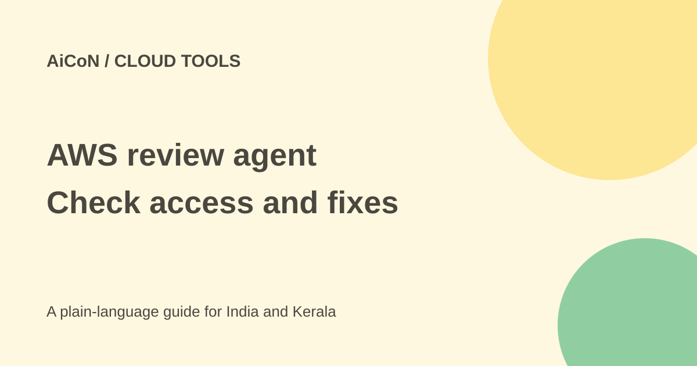

AWS Well-Architected Agent: preview access and costs
AWS Well-Architected Agent analyses cloud resources and suggests changes for cost, security, performance and resilience. It is in preview. Current documentation requires a Business+ support plan or higher, not just any support plan.

What does it review?
AWS says the agent correlates utilisation, configuration and application structure across more than 65 services. Recommendations are aligned to goals you specify and may include cost impact and implementation steps.
It can also inspect infrastructure-as-code such as Terraform, CloudFormation and CDK. These files describe cloud resources in code. Proposed fixes are still changes your team must review; they are not proof that applying them will improve every workload.
Eligibility is narrower than the launch wording
The launch broadly says access is available with an AWS Support plan. The checked user guide is more specific: Business+, Enterprise On-Ramp, Enterprise Support or Unified Operations are eligible. Developer and Business tier plans do not have access.
Agent profiles are hosted in US East N. Virginia, US East Ohio or US West Oregon. The service can scan resources in all commercial AWS regions, so an Indian workload and the agent's hosting region are different things. Review that distinction against your organisation's data rules.
How to run a cautious review
- Read the official user guide and confirm support eligibility in your own AWS account.
- Check the preview terms, quotas, permissions and current charges before setup.
- Choose a limited test account or application and the goals that matter to it.
- Create the agent profile in the Well-Architected console using the official setup instructions.
- Inspect the requested roles and permissions. Do not add all accounts by default.
- Review a finding's evidence, trade-offs, risk and estimated cost impact.
- Read any command or code diff before running it. Test in a non-production environment and keep a rollback plan.
- Measure the actual effect and remove unused access or profiles after the pilot.
Setup details that affect the review
The current guide says scheduled findings begin within 48 hours after a profile is properly configured. At least one application context is required; without it, scheduled recommendations do not run. Workload-account access roles are a separate setup step, not automatically created by finishing the profile.
The agent refreshes scheduled recommendations weekly. A report therefore does not prove that a later configuration change has already been assessed.
Free or paid?
The checked launch does not state a separate preview price. That does not make the total free: support eligibility, existing workloads and changes to resources can have costs. Confirm current account terms before enabling the service.
Optional Cost Explorer setup adds another cost check. AWS says its console is free, but API calls and resource-level granular data preferences are charged. After the main Cost Explorer service is enabled it cannot be disabled, though granular preferences can be changed. Do not enable every option just to try the agent. No single INR total is established. A suggested saving is an estimate, not a promise. A change that reduces one bill can increase another or affect availability.
For an Indian cloud team
Use it as a review aid with named owners for each fix. Do not let a generated Terraform edit reach production without tests and approval. Consider regulated data, US agent hosting and the roles granted across accounts.
It is enterprise infrastructure, not a ready-made personal assistant. The documentation says preview behaviour can change. We did not create a profile or inspect an actual AWS account.
What changed since the original post?
The current guide narrows support eligibility to Business+ or higher and expressly excludes Developer and Business plans. We keep the three US hosting regions separate from the commercial workload regions it can review.
Frequently asked questions
Does every support plan qualify?
No. The checked guide specifies Business+ or higher.
Can it review workloads in India?
The guide says all commercial AWS regions, while agent profiles are hosted in the listed US regions.
Should I run every suggested fix?
No. Review evidence, costs, trade-offs and rollback first.
Sources: Current AWS user guide · AWS preview launch · Official setup and permissions · Current quotas. Checked 7 October 2026.